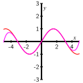

In the remainder of this chapter, we will include series that involve a variable. For instance, if in the geometric series in Equation (8.5.1) we replace the ratio \(r = \frac{1}{2}\) with the variable \(x\text{,}\) we have the infinite (still geometric) series
Here we see something very interesting: because a geometric series converges whenever its ratio \(r\) satisfies \(|r|\lt 1\text{,}\) and the sum of a convergent geometric series is \(\frac{a}{1-r}\text{,}\) we can say that for \(|x| \lt 1\text{,}\)
Equation (8.5.3) states that the non-polynomial function \(\frac{1}{1-x}\) on the right is equal to the infinite polynomial expresssion on the left. Because the terms on the left get very small as \(k\) gets large, we can truncate the series and say, for example, that
for small values of \(x\text{.}\) This shows one way that a polynomial function can be used to approximate a non-polynomial function; such approximations are one of the main themes in this section and the next.
In Preview Activity 8.5.1, we begin our exploration of approximating functions with polynomials.
Preview Activity8.5.1.
Preview Activity 8.3.1 showed how we can approximate the number \(e\) using linear, quadratic, and other polynomial functions; we then used similar ideas in Preview Activity 8.4.1 to approximate \(\ln(2)\text{.}\) In this activity, we review and extend the process to find the “best” quadratic approximation to the exponential function \(e^x\) around the origin. Let \(f(x) = e^x\) throughout this activity.
Find a formula for \(P_1(x)\text{,}\) the linearization of \(f(x)\) at \(x=0\text{.}\) (We label this linearization \(P_1\) because it is a first degree polynomial approximation.) Recall that \(P_1(x)\) is a good approximation to \(f(x)\) for values of \(x\) close to \(0\text{.}\) Plot \(f\) and \(P_1\) near \(x=0\) to illustrate this fact.
Since \(f(x) = e^x\) is not linear, the linear approximation eventually is not a very good one. To obtain better approximations, we want to develop a different approximation that “bends” to make it more closely fit the graph of \(f\) near \(x=0\text{.}\) To do so, we add a quadratic term to \(P_1(x)\text{.}\) In other words, we let
for some real number \(c_2\text{.}\) We need to determine the value of \(c_2\) that makes the graph of \(P_2(x)\) best fit the graph of \(f(x)\) near \(x=0\text{.}\)
Remember that \(P_1(x)\) was a good linear approximation to \(f(x)\) near \(0\text{;}\) this is because \(P_1(0) = f(0)\) and \(P'_1(0) = f'(0)\text{.}\) It is therefore reasonable to seek a value of \(c_2\) so that
Remember, we are letting \(P_2(x) = P_1(x) + c_2x^2\text{.}\)
Calculate \(P_2(0)\) to show that \(P_2(0) = f(0)\text{.}\)
Calculate \(P'_2(0)\) to show that \(P'_2(0) = f'(0)\text{.}\)
Calculate \(P''_2(x)\text{.}\) Then find a value for \(c_2\) so that \(P''_2(0) = f''(0)\text{.}\)
Explain why the condition \(P''_2(0) = f''(0)\) will put an appropriate “bend” in the graph of \(P_2\) to make \(P_2\) fit the graph of \(f\) around \(x=0\text{.}\)
Subsection8.5.1Taylor Polynomials
Preview Activity 8.5.1 illustrates the first steps in the process of approximating functions with polynomials. Using this process we can approximate trigonometric, exponential, logarithmic, and other nonpolynomial functions as closely as we like (for certain values of \(x\)) with polynomials. This is extraordinarily useful in that it allows us to calculate values of these functions to whatever precision we like using only the operations of addition, subtraction, multiplication, and division, which can be easily programmed in a computer.
We next extend the approach in Preview Activity 8.5.1 to arbitrary functions at arbitrary points. Let \(f\) be a function that has as many derivatives as we need at a point \(x=a\text{.}\) Recall that \(P_1(x)\) is the tangent line to \(f\) at \((a,f(a))\) and is given by the formula
so that \(P_2(x)\) more closely models \(f(x)\) near \(x=a\text{.}\) Consider the following calculations of the values and derivatives of \(P_2(x)\text{:}\)
To make \(P_2(x)\) fit \(f(x)\) better than \(P_1(x)\text{,}\) we want \(P_2(x)\) and \(f(x)\) to have the same concavity at \(x=a\text{,}\) in addition to having the same slope and function value. That is, we want to have
The defining property of these polynomials is that for each \(n\text{,}\)\(P_n(x)\) and all its first \(n\) derivatives must agree with those of \(f\) at \(x = a\text{.}\) In other words we require that
for each value of \(k\text{.}\) Using this expression for \(c_k\text{,}\) we have found the formula for the polynomial approximation of \(f\) that we seek. Such a polynomial is called a Taylor polynomial.
Taylor Polynomials.
The \(n\)th order Taylor polynomial of \(f\) centered at \(x = a\) is given by
This degree \(n\) polynomial approximates \(f(x)\) near \(x=a\) and has the property that \(P_n^{(k)}(a) = f^{(k)}(a)\) for \(k = 0, 1, \ldots, n\text{.}\)
Example8.5.1.
Determine the third order Taylor polynomial for \(f(x) = e^x\text{,}\) as well as the general \(n\)th order Taylor polynomial for \(f\) centered at \(x=0\text{.}\)
In general, for the exponential function \(f\) we have \(f^{(k)}(x) = e^x\) for every positive integer \(k\text{.}\) Thus, the \(k\)th term in the \(n\)th order Taylor polynomial for \(f(x)\) centered at \(x=0\) is
In this activity, we determine small order Taylor polynomials for several other familiar functions, and look for general patterns.
Let \(f(x) = \frac{1}{1-x}\text{.}\)
Calculate the first four derivatives of \(f(x)\) at \(x=0\text{.}\) Then find the fourth order Taylor polynomial \(P_4(x)\) for \(\frac{1}{1-x}\) centered at \(0\text{.}\)
Based on your results from part (i), determine a general formula for \(f^{(k)}(0)\text{.}\)
Let \(f(x) = \cos(x)\text{.}\)
Calculate the first four derivatives of \(f(x)\) at \(x=0\text{.}\) Then find the fourth order Taylor polynomial \(P_4(x)\) for \(\cos(x)\) centered at \(0\text{.}\)
Based on your results from part (i), find a general formula for \(f^{(k)}(0)\text{.}\) (Think about how \(k\) being even or odd affects the value of the \(k\)th derivative.)
Let \(f(x) = \sin(x)\text{.}\)
Calculate the first four derivatives of \(f(x)\) at \(x=0\text{.}\) Then find the fourth order Taylor polynomial \(P_4(x)\) for \(\sin(x)\) centered at \(0\text{.}\)
Based on your results from part (i), find a general formula for \(f^{(k)}(0)\text{.}\) (Think about how \(k\) being even or odd affects the value of the \(k\)th derivative.)
It is possible that an \(n\)th order Taylor polynomial is not a polynomial of degree \(n\text{;}\) that is, the order of the approximation can be different from the degree of the polynomial. For example, in Activity 8.5.3 we found that the second order Taylor polynomial \(P_2(x)\) centered at \(0\) for \(\sin(x)\) is \(P_2(x) = x\text{.}\) In this case, the second order Taylor polynomial is a degree 1 polynomial.
Subsection8.5.2Taylor Series
In Activity 8.5.2 we saw that the fourth order Taylor polynomial \(P_4(x)\) for \(\sin(x)\) centered at \(0\) is
\begin{equation*}
P_4(x) = x - \frac{x^3}{3!}\text{.}
\end{equation*}
The pattern we found for the derivatives \(f^{(k)}(0)\) describe the higher-order Taylor polynomials, e.g.,
\begin{align*}
P_5(x) \amp= x - \frac{x^3}{3!} + \frac{x^{5}}{5!}\text{,}\\
P_7(x) \amp= x - \frac{x^3}{3!} + \frac{x^{5}}{5!} - \frac{x^{7}}{7!}\text{,}\\
P_9(x) \amp= x - \frac{x^3}{3!} + \frac{x^{5}}{5!} - \frac{x^{7}}{7!} + \frac{x^{9}}{9!}\text{,}
\end{align*}
and so on. It is instructive to consider the graphical behavior of these functions; Figure 8.5.2 shows the graphs of a few of the Taylor polynomials centered at \(0\) for the sine function.

Figure8.5.2.The order 1, 5, 7, and 9 Taylor polynomials centered at \(x = 0\) for \(f(x) = \sin(x)\text{.}\)
Notice that \(P_1(x)\) is close to the sine function only for values of \(x\) that are close to \(0\text{,}\) but as we increase the degree of the Taylor polynomial the Taylor polynomials provide a better fit to the graph of the sine function over larger intervals. This illustrates the general behavior of Taylor polynomials: for any sufficiently well-behaved function, the sequence \(\{P_n(x)\}\) of Taylor polynomials converges to the function \(f\) on larger and larger intervals (though those intervals may not necessarily increase without bound). If the Taylor polynomials ultimately converge to \(f\) on its entire domain, we write
Let \(f\) be a function all of whose derivatives exist at \(x=a\text{.}\) The Taylor series for \(f\) centered at \(x=a\) is the series \(T_f(x)\) defined by
In the special case where \(a=0\) in Definition 8.5.3, the Taylor series is also called the Maclaurin series for \(f\text{.}\) From Example 8.5.1 we know the \(n\)th order Taylor polynomial centered at \(0\) for the exponential function \(e^x\text{;}\) thus, the Maclaurin series for \(e^x\) is
In Activity 8.5.2 we determined small order Taylor polynomials for a few familiar functions, and also found general patterns in the derivatives evaluated at \(0\text{.}\) Use that information to write the Taylor series centered at \(0\) for the following functions.
\(\displaystyle f(x) = \frac{1}{1-x}\)
\(f(x) = \cos(x)\) (You will need to carefully consider how to indicate that many of the coefficients are 0. Think about a general way to represent an even integer.)
\(f(x) = \sin(x)\) (You will need to carefully consider how to indicate that many of the coefficients are \(0\text{.}\) Think about a general way to represent an odd integer.)
\(\displaystyle f(x) = \frac{1}{1+x}\)
Activity8.5.4.
Plot the graphs of several of the Taylor polynomials centered at \(0\) (of order at least 5) for \(e^x\) and convince yourself that these Taylor polynomials converge to \(e^x\) for every value of \(x\text{.}\)
Draw the graphs of several of the Taylor polynomials centered at \(0\) (of order at least 6) for \(\cos(x)\) and convince yourself that these Taylor polynomials converge to \(\cos(x)\) for every value of \(x\text{.}\) Write the Taylor series centered at \(0\) for \(\cos(x)\text{.}\)
Draw the graphs of several of the Taylor polynomials centered at \(0\) for \(\frac{1}{1-x}\text{.}\) Based on your graphs, for what values of \(x\) do these Taylor polynomials appear to converge to \(\frac{1}{1-x}\text{?}\) How is this situation different from what we observe with \(e^x\) and \(\cos(x)\text{?}\) In addition, write the Taylor series centered at \(0\) for \(\frac{1}{1-x}\text{.}\)
The Maclaurin series for \(e^x\text{,}\)\(\sin(x)\text{,}\)\(\cos(x)\text{,}\) and \(\frac{1}{1-x}\) will be used frequently, so we should be certain to know and recognize them well.
Subsection8.5.3The Interval of Convergence of a Taylor Series
In the previous section (in Figure 8.5.2 and Activity 8.5.4) we observed that the Taylor polynomials centered at \(0\) for \(e^x\text{,}\)\(\cos(x)\text{,}\) and \(\sin(x)\) converged to these functions for all values of \(x\) in their domain, but that the Taylor polynomials centered at \(0\) for \(\frac{1}{1-x}\) converge to \(\frac{1}{1-x}\) on the interval \((-1,1)\) and diverge for all other values of \(x\text{.}\) So the Taylor series for a function \(f(x)\) does not need to converge for all values of \(x\) in the domain of \(f\text{.}\)
Our observations suggest two natural questions: can we determine the values of \(x\) for which a given Taylor series converges? And does the Taylor series for a function \(f\) actually converge to \(f(x)\text{?}\)
Example8.5.4.
Graphical evidence suggests that the Taylor series centered at \(0\) for \(e^x\) converges for all values of \(x\text{.}\) To verify this, use the Ratio Test to determine all values of \(x\) for which the Taylor series
Recall that the Ratio Test applies only to series of nonnegative terms. In this example, the variable \(x\) may have negative values. But we are interested in absolute convergence, so we apply the Ratio Test to the series
\begin{align*}
\lim_{k \to \infty} \frac{a_{k+1}}{a_k} \amp = \lim_{k \to \infty} \frac{\frac{| x |^{k+1}}{(k+1)!} }{ \frac{| x |^k}{k} }\\
\amp = \lim_{k \to \infty} \frac{| x |^{k+1}k!}{ | x |^{k}(k+1)! }\\
\amp = \lim_{k \to \infty} \frac{| x |}{k+1}\\
\amp = 0
\end{align*}
for any value of \(x\text{.}\) So the Taylor series (8.5.4) converges absolutely for every value of \(x\text{,}\) and thus converges for every value of \(x\text{.}\)
One question still remains: while the Taylor series for \(e^x\) converges for all \(x\text{,}\) what we have done does not tell us that this Taylor series actually converges to \(e^x\) for each \(x\text{.}\) We'll return to this question when we consider the error in a Taylor approximation near the end of this section.
We can apply the main idea from Example 8.5.4 in general. To determine the values of \(x\) for which a Taylor series
centered at \(x = a\) will converge, we apply the Ratio Test with \(a_k = | c_k (x-a)^k |\text{.}\) The series converges if \(\lim_{k \to \infty} \frac{a_{k+1}}{a_k} \lt 1\text{.}\)
There are three possibilities for \(L\text{:}\)\(L\) can be \(0\text{,}\) it can be a finite positive value, or it can be infinite. Based on this value of \(L\text{,}\) we can determine for which values of \(x\) the original Taylor series converges.
If \(L = 0\text{,}\) then the Taylor series converges on \((-\infty, \infty)\text{.}\)
If \(L\) is infinite, then the Taylor series converges only at \(x = a\text{.}\)
If \(L\) is finite and nonzero, then the Taylor series converges absolutely for all \(x\) that satisfy
\begin{equation*}
|x-a| \cdot L \lt 1
\end{equation*}
Because the Ratio Test is inconclusive when the \(|x-a| \cdot L = 1\text{,}\) the endpoints \(a \pm \frac{1}{L}\) have to be checked separately.
It is important to notice that the set of \(x\) values at which a Taylor series converges is always an interval centered at \(x=a\text{.}\) For this reason, the set on which a Taylor series converges is called the interval of convergence. Half the length of the interval of convergence is called the radius of convergence. If the interval of convergence of a Taylor series is infinite, then we say that the radius of convergence is infinite.
Activity8.5.5.
Use the Ratio Test to explicitly determine the interval of convergence of the Taylor series for \(f(x) = \frac{1}{1-x}\) centered at \(x=0\text{.}\)
Use the Ratio Test to explicitly determine the interval of convergence of the Taylor series for \(f(x) = \cos(x)\) centered at \(x=0\text{.}\)
Use the Ratio Test to explicitly determine the interval of convergence of the Taylor series for \(f(x) = \sin(x)\) centered at \(x=0\text{.}\)
The Ratio Test allows us to determine the set of \(x\) values for which a Taylor series converges absolutely. However, just because a Taylor series for a function \(f\) converges, we cannot be certain that the Taylor series actually converges to \(f(x)\text{.}\) To show why and where a Taylor series does in fact converge to the function \(f\text{,}\) we next consider the error that is present in Taylor polynomials.
Subsection8.5.4Error Approximations for Taylor Polynomials
We now know how to find Taylor polynomials for functions such as \(\sin(x)\text{,}\) and how to determine the interval of convergence of the corresponding Taylor series. We next develop an error bound that will tell us how well an \(n\)th order Taylor polynomial \(P_n(x)\) approximates its generating function \(f(x)\text{.}\) This error bound will also allow us to determine whether a Taylor series on its interval of convergence actually equals the function \(f\) from which the Taylor series is derived. Finally, we will be able to use the error bound to determine the order of the Taylor polynomial \(P_n(x)\) that we will ensure that \(P_n(x)\) approximates \(f(x)\) to the desired degree of accuracy.
For this argument, we assume throughout that we center our approximations at \(0\) (but a similar argument holds for approximations centered at \(a\)). We define the exact error, \(E_n(x)\text{,}\) that results from approximating \(f(x)\) with \(P_n(x)\) by
Suppose that we want to approximate \(f(x)\) at a number \(c\) close to \(0\) using \(P_n(c)\text{.}\) If we assume \(|f^{(n+1)}(t)|\) is bounded by some number \(M\) on \([0, c]\text{,}\) so that
\begin{equation*}
\left|f^{(n+1)}(t)\right| \leq M
\end{equation*}
for all \(0 \leq t \leq c\text{,}\) then we can say that
\begin{equation*}
\left|E^{(n+1)}_n(t)\right| = \left|f^{(n+1)}(t)\right| \leq M
\end{equation*}
for all \(t\) between \(0\) and \(c\text{.}\) Equivalently,
for all \(x\) in \([0, c]\text{,}\) and we have found a bound on the approximation's error, \(E_n\text{.}\)
Our work above was based on the approximation centered at \(a = 0\text{;}\) the argument may be generalized to hold for any value of \(a\text{,}\) which results in the following theorem.
The Lagrange Error Bound for \(P_n(x)\).
Let \(f\) be a continuous function with \(n+1\) continuous derivatives. Suppose that \(M\) is a positive real number such that \(\left|f^{(n+1)}(x)\right| \le M\) on the interval \([a, c]\text{.}\) If \(P_n(x)\) is the \(n\)th order Taylor polynomial for \(f(x)\) centered at \(x=a\text{,}\) then
We can use this error bound to tell us important information about Taylor polynomials and Taylor series, as we see in the following examples and activities.
Example8.5.5.
Determine how well the 10th order Taylor polynomial \(P_{10}(x)\) for \(\sin(x)\text{,}\) centered at \(0\text{,}\) approximates \(\sin(2)\text{.}\)
To answer this question we use \(f(x) = \sin(x)\text{,}\)\(c = 2\text{,}\)\(a=0\text{,}\) and \(n = 10\) in the Lagrange error bound formula. We also need to find an appropriate value for \(M\text{.}\) Note that the derivatives of \(f(x) = \sin(x)\) are all equal to \(\pm \sin(x)\) or \(\pm \cos(x)\text{.}\) Thus,
with an actual difference of about \(0.0000500159\text{.}\)
Activity8.5.6.
Let \(P_n(x)\) be the \(n\)th order Taylor polynomial for \(\sin(x)\) centered at \(x=0\text{.}\) Determine how large we need to choose \(n\) so that \(P_n(2)\) approximates \(\sin(2)\) to \(20\) decimal places.
Example8.5.6.
Show that the Taylor series for \(\sin(x)\) actually converges to \(\sin(x)\) for all \(x\text{.}\)
We showed in earlier work that the Taylor series \(\sum_{k=0}^{\infty} \frac{x^k}{k!}\) converges for every value of \(x\text{.}\) Because the terms of any convergent series must approach zero, it follows that
Show that the Taylor series centered at \(0\) for \(\cos(x)\) converges to \(\cos(x)\) for every real number \(x\text{.}\)
Next we consider the Taylor series for \(e^x\text{.}\)
Show that the Taylor series centered at \(0\) for \(e^x\) converges to \(e^x\) for every nonnegative value of \(x\text{.}\)
Show that the Taylor series centered at \(0\) for \(e^x\) converges to \(e^x\) for every negative value of \(x\text{.}\)
Explain why the Taylor series centered at \(0\) for \(e^x\) converges to \(e^x\) for every real number \(x\text{.}\) Recall that we earlier showed that the Taylor series centered at \(0\) for \(e^x\) converges for all \(x\text{,}\) and we have now completed the argument that the Taylor series for \(e^x\) actually converges to \(e^x\) for all \(x\text{.}\)
Let \(P_n(x)\) be the \(n\)th order Taylor polynomial for \(e^x\) centered at \(0\text{.}\) Find a value of \(n\) so that \(P_n(5)\) approximates \(e^5\) correct to \(8\) decimal places.
Subsection8.5.5Summary
We can use Taylor polynomials to approximate functions. This allows us to approximate values of functions using only addition, subtraction, multiplication, and division of real numbers. The \(n\)th order Taylor polynomial centered at \(x=a\) of a function \(f\) is
The \(n\)th order Taylor polynomial centered at \(a\) for \(f\) is the \(n\)th partial sum of its Taylor series centered at \(a\text{.}\) So the \(n\)th order Taylor polynomial for a function \(f\) is an approximation to \(f\) on the interval where the Taylor series converges; for the values of \(x\) for which the Taylor series converges to \(f\) we write
The Lagrange Error Bound shows us how to determine the accuracy in using a Taylor polynomial to approximate a function. More specifically, if \(P_n(x)\) is the \(n\)th order Taylor polynomial for \(f\) centered at \(x=a\) and if \(M\) is an upper bound for \(\left|f^{(n+1)}(x)\right|\) on the interval \([a, c]\text{,}\) then
1.Determining Taylor polynomials from a function formula.
Find the Taylor polynomials of degree \(n\) approximating \(\sin\!\left(2x\right)\) for \(x\) near 0:
For \(n=1\text{,}\)\(P_{1}(x) =\)
For \(n=3\text{,}\)\(P_{3}(x) =\)
For \(n=5\text{,}\)\(P_{5}(x) =\)
2.Determining Taylor polynomials from given derivative values.
Suppose \(g\) is a function which has continuous derivatives, and that \(g(5)=2, g'(5)=4\text{,}\)\(g''(5)=2\text{,}\)\(g'''(5)=3\text{.}\)
(a) What is the Taylor polynomial of degree 2 for \(g\) near \(5\text{?}\)
\(P_2(x) =\)
(b) What is the Taylor polynomial of degree 3 for \(g\) near \(5\text{?}\)
\(P_3(x) =\)
(c) Use the two polynomials that you found in parts (a) and (b) to approximate \(g(4.9)\text{.}\)
With \(P_2\text{,}\)\(g(4.9)\approx\)
With \(P_3\text{,}\)\(g(4.9)\approx\)
3.Finding the Taylor series for a given rational function.
Find the first four terms of the Taylor series for the function \(\displaystyle \frac{4}{x}\) about the point \(a = -1\text{.}\) (Your answers should include the variable x when appropriate.)
\(\displaystyle \frac{4}{x} =\) + + + + ...
4.Finding the Taylor series for a given trigonometric function.
Find the first four terms of the Taylor series for the function \(4 \cos(x)\) about the point \(a = \pi/4\text{.}\) (Your answers should include the variable x when appropriate.)
\(4 \cos(x) =\) + + + + ...
5.Finding the Taylor series for a given logarithmic function.
Find the first five terms of the Taylor series for the function \(f(x) = \ln\!\left(x\right)\) about the point \(a = 10\text{.}\) (Your answers should include the variable x when appropriate.)
\(\ln\!\left(x\right) =\) + + + + + ...
6.
In this exercise we investigation the Taylor series of polynomial functions.
Find the 3rd order Taylor polynomial centered at \(a = 0\) for \(f(x) = x^3-2x^2+3x-1\text{.}\) Does your answer surprise you? Explain.
Without doing any additional computation, find the 4th, 12th, and 100th order Taylor polynomials (centered at \(a = 0\)) for \(f(x) = x^3-2x^2+3x-1\text{.}\) Why should you expect this?
Now suppose \(f(x)\) is a degree \(m\) polynomial. Completely describe the \(n\)th order Taylor polynomial (centered at \(a = 0\)) for each \(n\text{.}\)
7.
The examples we have considered in this section have all been for Taylor polynomials and series centered at 0, but Taylor polynomials and series can be centered at any value of \(a\text{.}\) We look at examples of such Taylor polynomials in this exercise.
Let \(f(x) = \sin(x)\text{.}\) Find the Taylor polynomials up through order four of \(f\) centered at \(x = \frac{\pi}{2}\text{.}\) Then find the Taylor series for \(f(x)\) centered at \(x = \frac{\pi}{2}\text{.}\) Why should you have expected the result?
Let \(f(x) = \ln(x)\text{.}\) Find the Taylor polynomials up through order four of \(f\) centered at \(x = 1\text{.}\) Then find the Taylor series for \(f(x)\) centered at \(x = 1\text{.}\)
Use your result from (b) to determine which Taylor polynomial will approximate \(\ln(2)\) to two decimal places. Explain in detail how you know you have the desired accuracy.
8.
We can use known Taylor series to obtain other Taylor series, and we explore that idea in this exercise, as a preview of work in the following section.
Calculate the first four derivatives of \(\sin(x^2)\) and hence find the fourth order Taylor polynomial for \(\sin(x^2)\) centered at \(a=0\text{.}\)
Part (a) demonstrates the brute force approach to computing Taylor polynomials and series. Now we find an easier method that utilizes a known Taylor series. Recall that the Taylor series centered at 0 for \(f(x) = \sin(x)\) is
Substitute \(x^2\) for \(x\) in the Taylor series (8.5.7). Write out the first several terms and compare to your work in part (a). Explain why the substitution in this problem should give the Taylor series for \(\sin(x^2)\) centered at 0.
What should we expect the interval of convergence of the series for \(\sin(x^2)\) to be? Explain in detail.
9.
Based on the examples we have seen, we might expect that the Taylor series for a function \(f\) always converges to the values \(f(x)\) on its interval of convergence. We explore that idea in more detail in this exercise. Let \(f(x) = \begin{cases}e^{-1/x^2} \amp \text{ if } x \neq 0, \\ 0 \amp \text{ if } x = 0. \end{cases}\)
Show, using the definition of the derivative, that \(f'(0) = 0\text{.}\)
It can be shown that \(f^{(n)}(0) = 0\) for all \(n \geq 2\text{.}\) Assuming that this is true, find the Taylor series for \(f\) centered at 0.
What is the interval of convergence of the Taylor series centered at 0 for \(f\text{?}\) Explain. For which values of \(x\) the interval of convergence of the Taylor series does the Taylor series converge to \(f(x)\text{?}\)